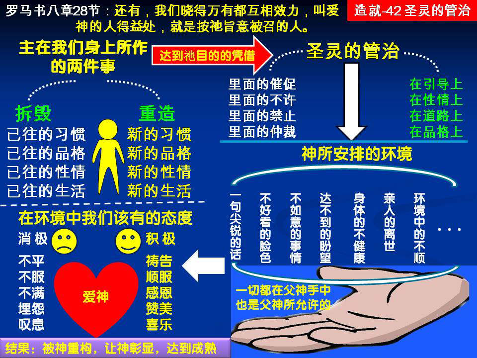

诗歌：366首、291首
重要经文：
罗马书八章28节：还有，我们晓得万有都互相效力，叫爱神的人得益处，就是按祂旨意被召的人。
诗篇三十九篇9节：因为这是你所作的，我就闭口不语。
创世记四十七章9~10节：雅各对法老说，我寄居在世的年日是一百三十岁；我平生的年日又少又苦，不及我列祖在世寄居的年日。雅各又给法老祝福，就从法老面前出去了。
纲目要点：
壹 主在我们身上要作两方面的事。
贰 圣灵的管治。
参 我们的环境是神所安排的。
肆 当遭遇事情的时候，我们应该有的态度：
一 我们的态度如果对，就立刻能得着那个益处。
二 认识神的路是在爱上，不是在知识上。
三 你若要得着神，爱是最短路径。（诗歌三六六首第三节。）
四 看见神在我们身上有拆毁和组织。
伍 拆毁与组织：
一 你们要靠主常常喜乐-腓四4。
二 神不要原味，神要那一个香气有改变。
三 从创世记所记载的雅各生平，看出什么叫作组织。
陆 借着圣灵的管治，拆毁、组织我们，达到成熟的地步。
信息选读：
主在我们身上要作两方面的事
自从我们得救以后，主在我们身上就要作两方面的事：一面，主要拆毁我们已往的习惯、已往的品格、已往的性情。只有这样作，才能使基督的生命从我们身上自由的显露出来；如果不这样作，主的生命就受天然生命的拦阻。另一面，圣灵要在我们身上细细的造出一个新的性情来，造出一个新的品格来，带着一个新的生活和新的习惯。主不只要把旧的拆毁，并且还要把新的组织在我们身上；不只要有消极的拆毁，并且也要有积极的组织。这是在我们得救以后，主在我们身上所要作的两方面的事。
圣灵的管治
神知道我们到底需要拆毁多少，神也知道我们在什么地方特别强硬，什么地方过分厉害。也许我们有的地方是太快，也许有的地方是太慢，也许有的地方太轻浮，也许有的地方太拘谨；这，只有神知道，人不知道，连我们自己也不知道。只有神透彻的认识我们，只能让神来作。神的安排是外面的事，但是，要借着圣灵把这些安排翻译成我们里面的东西，把它应用在我们身上。这一个把外面的事情转变成里面的东西，我们就称之为圣灵的管治。不但如此，并且事实上神也是借着圣灵安排环境的；神不直接安排我们的遭遇，神乃是借着祂的灵安排我们的遭遇。从主升天直到主再来的这个时代，是圣灵的时代；在这一个时代里，神的工作都是借着圣灵在那里作的。圣灵在环境里安排，圣灵也在神的儿女里面引导。使徒行传有好几处地方说到是圣灵在那里催促，是圣灵在那里不许，是圣灵在那里禁止。我们把圣灵在环境中的安排以及这些里面的催促、不许和禁止统统合起来，给它一个名词，叫做『圣灵的管治，』意思就是圣灵在那里管理我们。这一个管治，不只是在引导上，也是在性情上；不只是在道路上，也是在品格上。因为在我们里面已经有了一个新的生命，已经有神的灵住在我们里面，祂知道我们所需要的到底是什么，祂知道我们应该遇见什么事于我们最合式；圣灵的管治就是神借着圣灵在那里安排，使我们遇见合式的环境，来配合我们这一个人的需要，借此在我们身上作成拆毁和组织的工作。
我们的环境是神所安排的
一句尖锐的话，一个不好看的脸色，一件不如意的事情，一个达不到的盼望，身体的健康忽然失去，亲爱的人忽然离开，这一切的事都是父所许可的。不管是顺利，不管是打击，不管是健康，不管是疾病，不管是喜乐，不管是痛苦，所有一切临到我们的事，都经过神的许可。神就是安排环境使我们老的品格、老的性情受拆毁，又把新的品格、新的性情组织在我们身上。神在那里安排我们所需要的环境，叫我们从这些环境中不知不觉的受了拆毁，受了圣灵的组织，就有了像神的品格，像神的性情；这些像神的品格和性情就一天过一天的从我们身上彰显出来。
我们该有的态度
我们对于许多事情，就会又不平，又不服，又埋怨，又叹息。弟兄姊妹，请你记得，虽然万事都互相效力，可是因为我们的心不爱神，我们就不能立刻得着益处。因此，有许多神的儿女的的确确是遭遇了许多事，但是，他们并没有得着什么益处。有很多的管治在他们身上，有很多的安排在他们身上，但是他们没有得着丰富的结果。这没有别的原因，这是因为他们在神之外有其他的目的，他们在神面前的心不是柔软的，不觉得神的爱，所以也不爱神。因为他们的态度不对，所以他们即使受了许多对付，但在灵里并没有留下什么东西。求神怜悯我们，使我们一信主就从心里学习爱神。缺少知识关系还小，因为认识神的路是在爱上，而不是在知识上。人若爱神，即使他缺少知识，他还是能认识神的；如果他知道了许多，而心里不爱神，那就所有的知识都不能帮助他认识神。在诗歌中有两句很好的话：『你若要得着神，爱是最短路径。』（诗歌三六六首第三节。）人如果真的爱神，那么，不论遇见什么事，都要变成他的益处。
神不要原味，神要那一个香气有改变
主叫我们天天遭遇许多事，很少是我们所喜欢遭遇的，因此，圣经的命令乃是说，『你们要在主里常常喜乐。』（腓四4。）我们是靠主喜乐，所以才能常常喜乐。在主之外，没有什么能叫我们常常喜乐的。那么，为什么神要给我们这些不如意的遭遇呢？祂的目的是什么呢？祂的目的是要拆毁我们天然的生命。我们看见，有的人已经信主十年，可是他信主的那一天是什么味道，十年之后仍是什么味道。有的人信主头一天是随随便便的，过了二十年还是随随便便的；头一天是莫名其妙的在那里作人，今天还是莫名其妙的在那里作人。他这个人的原味尚存，香气未变。这是神所不要的。神要除去我们原来的习惯，原来的性情，原来的品格；凡我们不对的地方，神都要把我们除掉。
神在我们身上有积极的组织
神在我们身上不只有消极的拆毁，并且有积极的组织。我们从创世记所记载的雅各生平的故事中，能看出什么叫作组织。雅各这个人的起点是很低的。他还在母腹里的时候，就与哥哥相争，生下来的时候就争先，抓住哥哥的脚跟。他又狡猾，又贪心，总是用手段去对待人，总是作他上算的事。他欺骗自己的父亲，欺骗自己的哥哥，欺骗自己的舅舅。可是，他也受他舅舅的欺骗，受他儿子的欺骗。他是尽力要叫自己发达，但是结果还是落在饥饿之中。可以说，雅各这个人所经过的路是非常艰苦的。有的人是舒服的在那里作人，可是雅各是艰苦的在那里作人。雅各经过这么多年的拆毁，结果神在他身上就有这么多的组织，所以在他临终的时候，能有这样的美－扶着杖头敬拜神。 （摘自初信造就第四十二篇）
课程复习：
一 自从我们得救以后，主在我们身上就要作哪两方面的事？
二 什么是圣灵的管治？
三 在认识环境是神所安排的事上，我们该有的态度为何？
四 信主以来，神有否要除去你身上原来的习惯、性情?
五 请从雅各的事例说明，神在你身上有消极的拆毁，也有积极的组织。
辅助图表：
